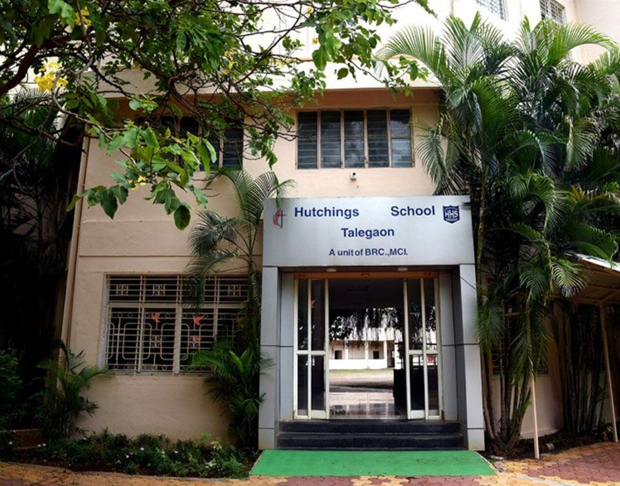
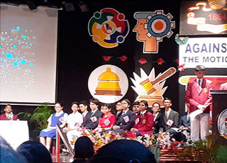

From Isabella Thoburn to Hutchings — Methodist education as mission since the nineteenth century.
The history of Hutchings goes back more than 140 years to 1879, when the "Methodist High School" was formed by Rev. William E. Robbins and Rev. William Taylor.
The school started with 49 children in a rented house as a co-educational institution with boarding facilities. It was renamed "Taylor High School" in 1890.
Today, the school has 3,045 students with 124 teaching and non-teaching staff, running classes from Pre-nursery to 12th Standard with ICSE and ISC affiliations.

A unit of the Mumbai Regional Conference of the Methodist Church in India, established under partnership between MRC and Good People International (GPI), Korea.
The groundbreaking ceremony was held on 5 February 2002, involving Rev. Dr. David Yonggi Cho, Bishop Aggarwal, and district superintendents. The school was inaugurated on 24 October 2009 by Bishop Dr. Elia Pradeep Samuel.
Today, the school has 1,006+ children with 43 staff members, recognized by the Government of Maharashtra and affiliated to CISCE New Delhi.
| Year | Bishop (Chairman) | Manager | Principal |
|---|---|---|---|
| 1981-86 | Bishop E. A. Mitchell | Rev. C. Salins | Ms. Hemlata Singh |
| 1986-88 | Bishop E. D. Clive | Rev. P. H. Wasker | Ms. Hemlata Singh |
| 1988-90 | Bishop E. D. Clive | Miss R. S. Solomon | Dr. Mrs. O. Mathews |
| 1990-94 | Bishop Stanley E. Downes | Various | Dr. Mrs. O. Mathews |
| 1994-99 | Bishop Dr. S. R. Thomas | Rev. M. A. Daniel | Dr. Mrs. O. Mathews |
| 1999-2005 | Bishop Dr. D. K. Agarwal | Various | Dr. Mrs. O. Mathews / Mrs. M. S. Bhosle |
| 2007-2012 | Bishop Dr. Elia Pradeep Samuel | Rev. Dr. C. Selvin | Mrs. M. S. Bhosle |
| 2012-2014 | Bishop Dr. Elia Pradeep Samuel | Rev. Dr. C. Selvin | Ms. R. I. Katawati |
| 2014-2016 | Bishop N. L. Karkare | Rev. Dr. C. Selvin | Ms. R. I. Katawati |
| 2016-2025 | Bishop Dr. Anilkumar Servand | Rev. Dr. C. Selvin | Ms. R. I. Katawati |
| 2025-present | Bishop Dr. Newton M. Parmar | Rev. Shamual S. Damle | Ms. R. I. Katawati |
Since 1926 in Ghaziabad. Bishop Dr. Newton M. Parmar serves in its institutional leadership.
Across MCI nationally, Methodist schools provide education to over 60,000 children.
Vocational training institutions and colleges serving communities across India.
From a rented house with 49 children in 1879 to 3,000+ students today — the Hutchings legacy continues. Be part of this mission.